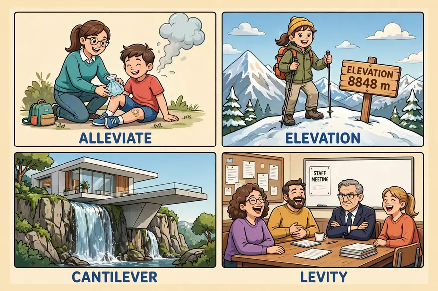
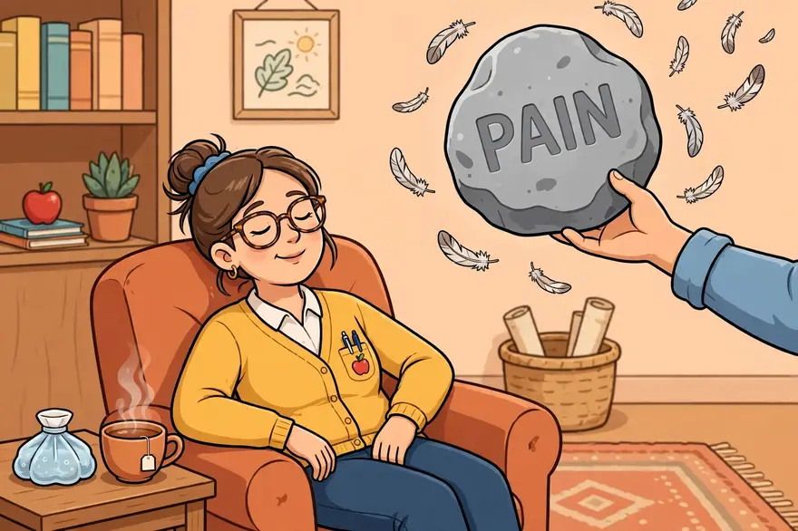
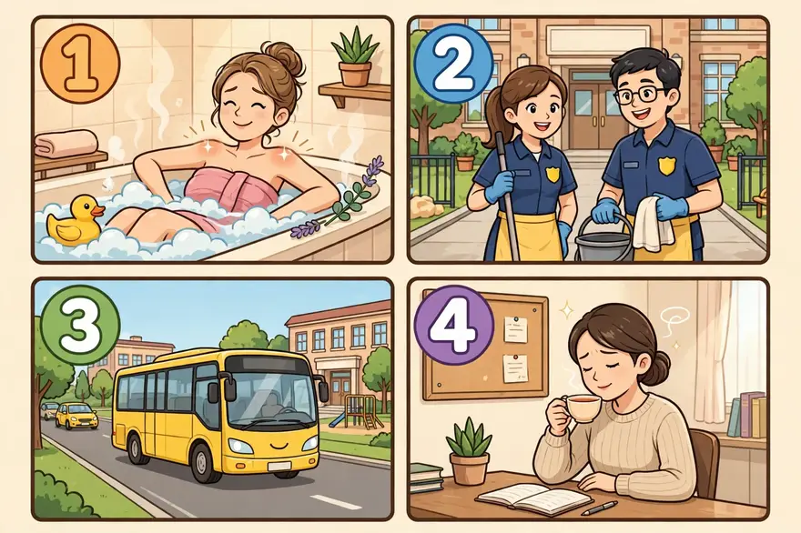
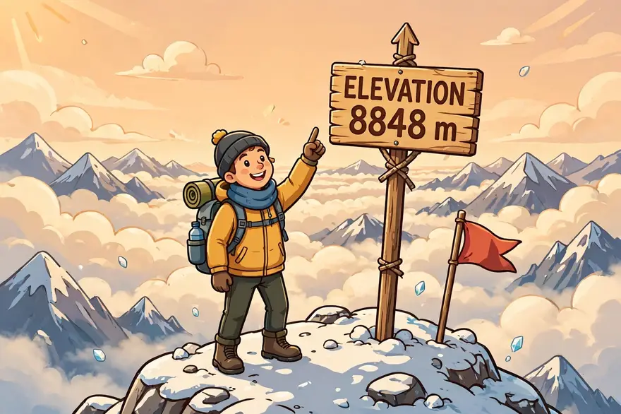
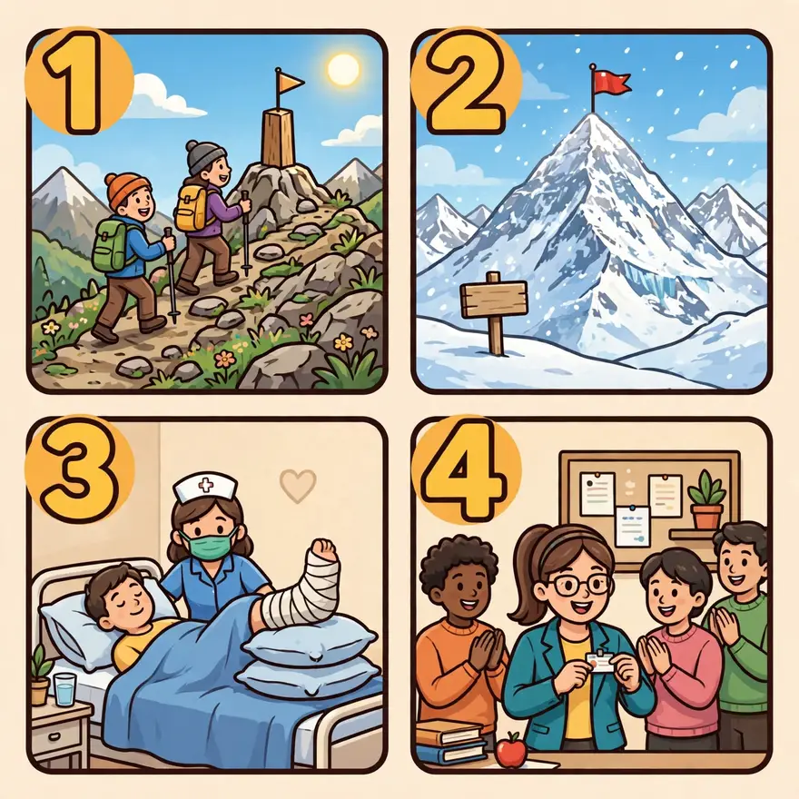
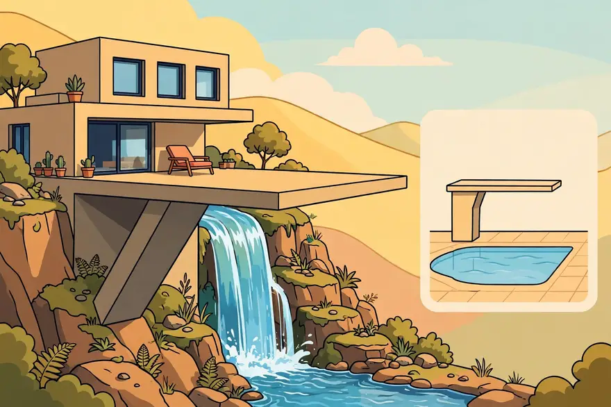
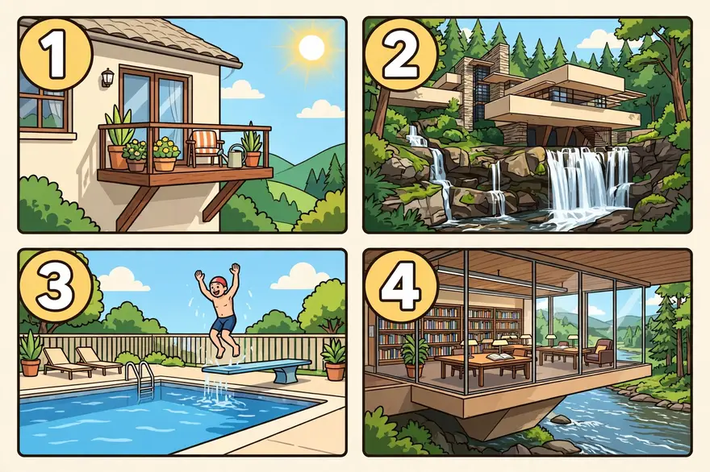
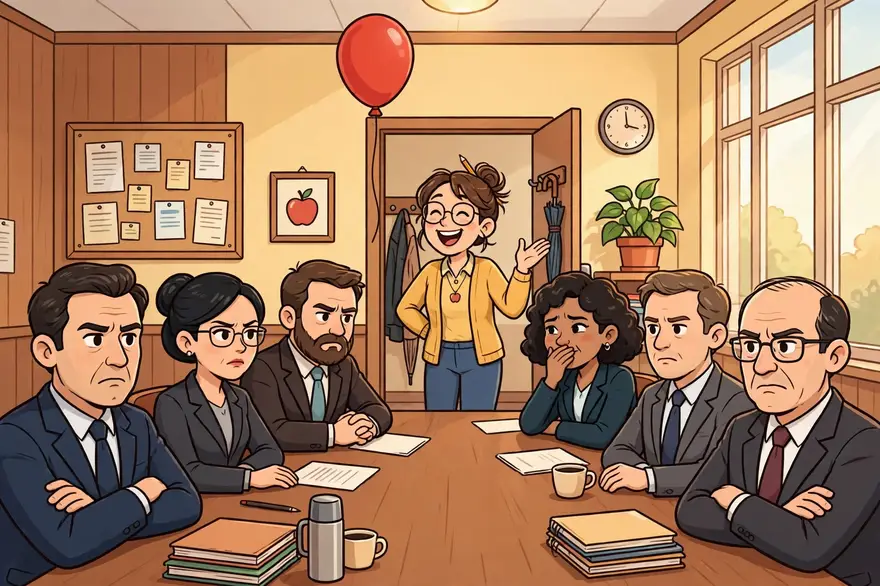
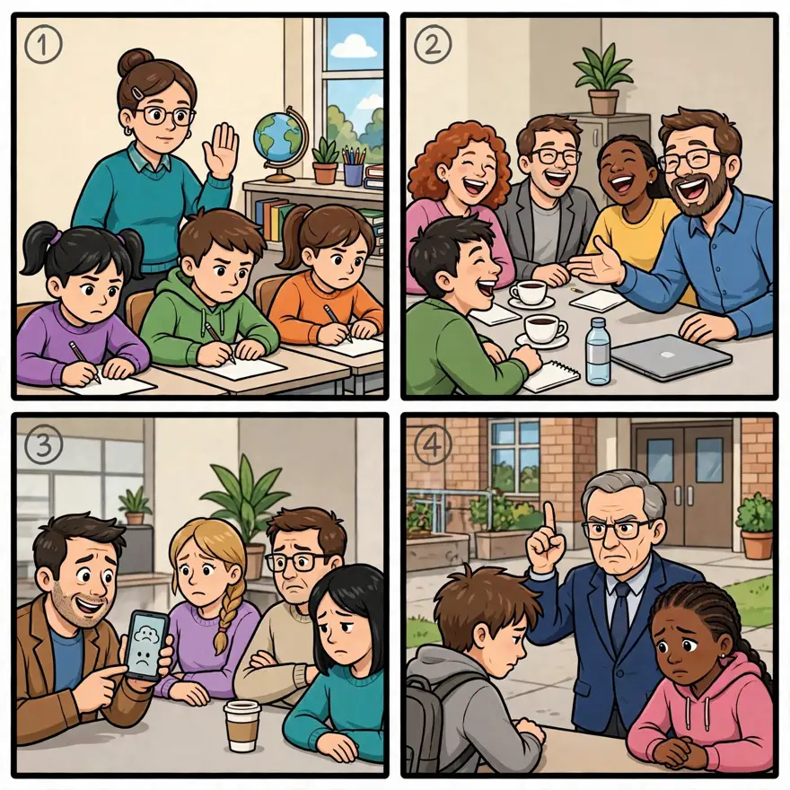
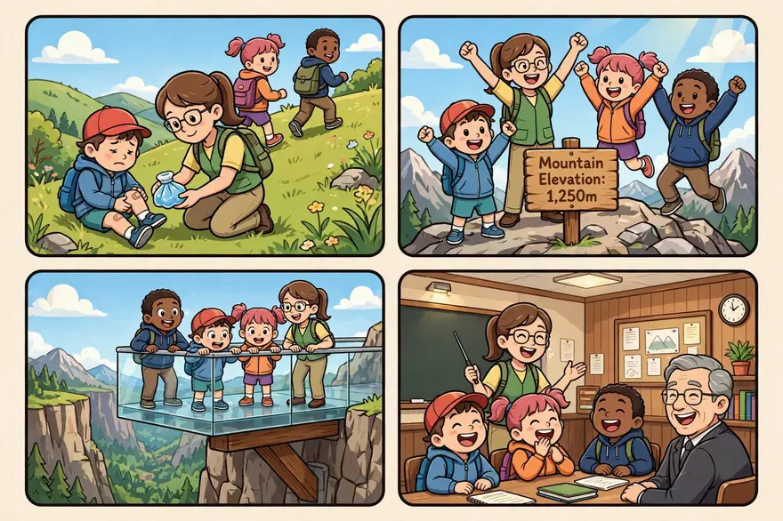

点开单元看词根；带链接的是已上线词根，其余陆续制作中。
词汇课首页 › Unit 1 › LEV
🔊 词根发音：/lev/（和 lever「杠杆」的开头读法一样——LEV 就是「轻、举」本身；它来自拉丁语 levis「轻的」和 levare「举起」）
Our new school library opened today, and its reading room is held up by a single cantilever — the whole room juts out over the river like a giant diving board, with no posts underneath at all. A brass plate by the door records the library’s elevation: 128 metres above sea level. During the opening ceremony, a teacher twisted her ankle on the stairs, and an ice pack soon alleviated the pain, so she could still cut the ribbon. And during the head teacher’s very serious speech, one little joke from the back row brought a moment of levity to the whole hall — even the head teacher laughed. A room held up by one beam, a pain eased by ice, a speech saved by a joke: today was a very LEV day.
本则为自创热点段子：词是真的，事是编的——alleviate、elevation、cantilever、levity 四个词一个不少，全在里面。真实新闻里也有同样的 alleviate：11 月 5 日，MedicalXpress 报道了一项发表于《JAMA 耳鼻咽喉头颈外科》的小型试验：两种鼻喷剂联用，四周后 83% 的慢性鼻塞患者症状至少中度改善，而单用激素喷剂组只有 36%，且联用组无人出现反弹性肿胀。真实数据：珠穆朗玛峰 elevation 8,848.86 米（中尼两国 2020 年 12 月 8 日共同宣布）。
LEV comes from the Latin adjective levis, meaning “light,” and the verb levare, meaning “to raise or lighten.” So a lever is a bar used to lift something, by means of leverage. And levitation is the magician’s trick in which a body seems to rise into the air by itself.
LEV 一家全和「轻」有关，但分工清楚：alleviate 是把重量卸下来（缓解），elevation 是把东西举上去（海拔、提升），cantilever 是靠「举」的力气悬在半空（悬臂），levity 是态度上的「轻」（轻浮）。上一课 GRAV 是「重」，这一课 LEV 是「轻」——重与轻，正好是一对反义词。

在图片中，画面分成四格：左上，一位女士正给一个男孩的膝盖敷冰袋，对应 alleviate（缓解）；右上，一位登山者站在雪山之巅，旁边立着一块写有 ELEVATION 8848 m 的木牌，对应 elevation（海拔）；左下，一栋现代房子的大露台探出在瀑布上方，下面没有任何柱子，对应 cantilever（悬臂）；右下，严肃的会议桌上，一位老师讲了个笑话，全场都笑了起来，对应 levity（轻浮）。
To lighten, lessen, or relieve, especially physical or mental suffering.
• Cold compresses alleviated the pain of the physical injury, but only time could alleviate the effect of the insult.
Physical pain or emotional anguish, or a water shortage or traffic congestion, can all be alleviated by providing the appropriate remedy. But some pain or anguish or shortage or congestion will remain: to alleviate is not to cure.
使变轻、减轻或缓解（尤指身体或精神上的痛苦）。
例句：冷敷缓解了身体受伤的疼痛，但只有时间才能缓解那句侮辱带来的伤害。
身体的疼痛或情感的痛苦，缺水或交通拥堵，都可以通过提供适当的解决办法来缓解。但总会还剩一些疼痛、痛苦、短缺或拥堵：alleviate 不是 cure（治愈）。
—— 下面是我的讲解 ——
🧠 记忆妙招：alleviate 就是「给痛苦减重」——ad-（朝向）+ levis（轻的）= 把压在身上的重量卸下一部分。画面就是记忆图：一位老师瘫在扶手椅里，一块写着 PAIN 的大石头压在她肩上，一只手把石头轻轻托起来，石头像羽毛一样飘走，旁边还放着冰袋和一杯热茶。词源小知识：16 世纪早期，alleviate 既可指字面「使重量变轻」，也可指「使更能忍受」，字面义现已过时，只剩比喻义（Merriam-Webster「Did You Know」）。它的堂亲 relieve 也来自 LEV 家：relieve 走 levare「举起」那条线，alleviate 走 levis「轻的」直系，两词在词根处会合。真实搭配：联合国新闻写扶贫，用的就是 strategies for alleviating global poverty（缓解全球贫困的策略，UN News 2010-06-17）——注意，这里是「缓解」不是「消灭」，语气务实、留有余地。医疗场景：英国 NHS 患者手册原文写 Ice massage … can alleviate pain（冰敷按摩可以缓解疼痛）。

💡 场合与语境：医疗新闻、机构报告、扶贫与发展报道里最常见；宾语多是 pain / symptoms / suffering / pressure / congestion / burden 这类「负面、可减量」的东西。
🔁 高级替换：写「缓解疼痛」用 alleviate pain，比 make the pain less 高级得多；写政策、经济用 alleviate poverty / alleviate congestion，是机构文书的固定搭配。
⚠️ 注意：alleviate ≠ cure / solve / eliminate——它只表「减轻程度」，说 alleviate the disease 不地道，通常说 alleviate symptoms / pain caused by…；考试作文里用它替换 solve the problem 属于过度承诺，千万别这么写。
写作：写「缓解问题」用 alleviate poverty（缓解贫困，联合国文书常用搭配）/ alleviate congestion（缓解拥堵）/ alleviate pain（缓解疼痛）；它只表「减轻程度」，别拿它替换 solve the problem——那是过度承诺。
✏️ 拼写：al-le-vi-ate；al- 是 ad- 的变体；注意中间的 -levi- 就是 LEV（轻）本身；别和 elevate（举起、提升）看混——一个是「卸重量」，一个是「往上举」。
例句：

图片四格与下面 ①②③④ 四个例句一一对应。
① A warm bath can alleviate the pain in my shoulders after a long day of teaching.
长时间教学后，泡个热水澡能缓解我肩膀的疼痛。
② The school hired two more cleaners to alleviate the pressure on the cleaning staff.
学校多请了两位保洁员，以减轻保洁人员的压力。
③ The new bus route should alleviate traffic congestion around our school.
新公交线路应该能缓解我们学校周边的交通拥堵。
④ A cup of hot tea and a quiet room alleviated my headache before the meeting.
开会前，一杯热茶和一间安静的屋子缓解了我的头痛。
(1) The height of a place. (2) The act or result of lifting or raising someone or something.
• Her doctor is concerned about the elevation of her blood pressure since her last visit.
When you're hiking, you may be interested in knowing the highest elevation you'll be reaching. Psychologists use the term “mood elevation” to mean improvement in a patient's depression, and some leg ailments require elevation of the limb, usually so that it's higher than the heart for part of each day. Elevation can also mean “promotion”; thus, a vice president may be elevated to president, or a captain may be elevated to admiral.
（1）某地的高度；海拔。(2) 抬高、提升的行为或结果。
例句：自从上次就诊以来，她的血压升高了，医生很担心。
爬山的时候，你可能会想知道自己将到达的最高海拔是多少。心理学家用 mood elevation（情绪提升）这个说法来表示病人抑郁的好转；有些腿部疾病需要把腿抬高，通常每天要有一段时间让腿高于心脏。elevation 还可以表示「升职」；比如，一位副总统可能被提升为总统，一位上校可能被提升为将军。
—— 下面是我的讲解 ——
🧠 记忆妙招：elevation 就是「被举起来的高度」——e-（向上）+ levare（举起）。画面就是记忆图：登山者站在雪山之巅，指着一块写有 ELEVATION 8848 m 的木牌，脚下是云海。最硬的数字要记牢：珠穆朗玛峰 elevation 为 8,848.86 米（29,031.7 英尺），是尼泊尔与中国 2020 年联合测量、于 2020 年 12 月 8 日共同宣布的结果，为雪面高度；岩石面高度约 8,844.43 米；它取代了此前长期使用的 8,848 米旧数据（Wikipedia：Mount Everest；Guinness World Records）。登山术语 elevation gain 指一条路线上所有上坡段爬升的总和，不是起点与终点的海拔差。建筑图纸里 elevation 还指「立面图」——同一词从「抬高」引申为「立着看的那张图」。原书讲解段还给了两个活例子：心理学家说 mood elevation（情绪提升）指病人抑郁的好转；腿伤了要把腿 elevation（抬高），每天一段时间高过心脏。还有「升职」义：副总统 elevated to president（升任总统），上校 elevated to admiral（升任将军）。

💡 场合与语境：地理、登山、天气预报说海拔；医生说血压、情绪「升高」；职场、新闻说「升职」。
🔁 高级替换：写「海拔」用 the elevation of …，比 how high is … 正式得多；写「升职」用 her elevation to head teacher；写登山路线用 elevation gain（总爬升），是徒步圈的固定术语。
⚠️ 注意：elevation 与 altitude 多数场合可互换指海拔，但严格区分时：地面上的点用 elevation，飞行器、空中物体用 altitude（Merriam-Webster；美国气象学会词汇表）；别把珠峰高度写成 8,848 米还称「现行官方数据」——现行中尼共同宣布数据是 8,848.86 米（2020 年）。
写作：写登山、地理用 the elevation of …（……的海拔）；写「升职」用 her elevation to head teacher；写血压用 elevation of blood pressure，比 rise 更正式。
✏️ 拼写：el-e-va-tion；词根是 elevate（举起、提升）+ -tion；重音在 va：el-e-VA-tion。
例句：

图片四格与下面 ①②③④ 四个例句一一对应。
① We hiked to the top, and the elevation there was over 2,000 metres.
我们爬到山顶，那里的海拔超过 2000 米。
② The elevation of Mount Everest is 8,848.86 metres, the height announced by China and Nepal in 2020.
珠穆朗玛峰的海拔是 8848.86 米，这是中尼两国 2020 年共同宣布的高度。
③ After the injury, the nurse told him to keep the leg in elevation, higher than his heart.
受伤后，护士让他每天把腿抬高一段时间，高过心脏。
④ Her elevation to head teacher surprised no one — she had earned it.
她升任校长一点也不让人意外——这是她应得的。
A long piece of wood, metal, etc., that sticks out from a wall to support something above it.
• The house's deck, supported by cantilevers, jutted out dramatically over the rocky slope, and looking over the edge made him dizzy.
Cantilevers hold up a surface or room without themselves being supported at their outer end. Many outdoor balconies are cantilevered, and theater balconies may be as well. A cantilevered bridge may have a huge span (as long as 1,800 feet) built out on either side of a single large foundation pier. Architects sometimes use cantilevered construction to produce dramatic effects; Frank Lloyd Wright's “Fallingwater” house, which extends out over a rocky river, is a famous example. But the Grand Canyon's “Skywalk” has become perhaps the best-known piece of cantilevered construction in America.
从墙上伸出来、用来支撑上方物体的长条木料、金属等。
例句：这栋房子的露台由悬臂支撑着，戏剧性地探出在岩石斜坡上方，往边缘一看就让人头晕。
悬臂撑起一个平面或一间屋子，而它们自己的外端却没有任何支撑。许多户外阳台都是悬臂式的，剧院的包厢阳台也可能是。悬臂桥的跨度可以非常大（长达 1,800 英尺，约 549 米），从一座大型桥墩的两侧向外伸出。建筑师有时会用悬臂结构来制造戏剧性的效果；弗兰克·劳埃德·赖特的「流水别墅」，探出在一条岩石河流的上方，就是一个著名的例子。而大峡谷的「天空步道」，则成了美国最著名的悬臂建筑。
—— 下面是我的讲解 ——
🧠 记忆妙招：cantilever 就是「一端固定、一端悬空的大梁」——跳水板是最好的模型：一头钉死在台子上，一头探出水面，照样能站人（Britannica Kids 的标准类比）。画面就是记忆图：流水别墅式的现代房子，大露台像跳水板一样探出在瀑布上方，右下角还配了一张跳水板小图。词源必须带「可能」讲：主流说法是 1660 年代出现，probably from cant + lever；但最早形式约 1610 年作 cantlapper，与现代拼写对不上，所以只能说「很可能」（Etymonline；Dictionary.com 标注为 perhaps cant + -i- + lever）。后半 lever 这条线是清楚的：lever 经古法语来自拉丁语 levare「举起」。还有一种猜想认为前半和西班牙语 can「狗」有关——词源学界只标注为可能，未定论，千万别讲成定论。真实案例：流水别墅 Fallingwater（宾夕法尼亚州）：赖特 1935 年设计、1937 年建成主体，钢筋混凝土悬臂露台直接探出在瀑布上方；业主考夫曼与赖特就悬臂稳定性争执，下令按其工程师意见增加钢筋——1995 年雷达探测研究证实加筋确实发生过；露台下挠到 1955 年约 4 英寸，1994 年研究测得一处已近 7 英寸，2001–2002 年采用后张拉钢索系统加固（Fallingwater 官网）。福斯桥 Forth Bridge（苏格兰）：1890 年通车，全长 2,529 米，三座双悬臂塔、悬臂臂长各 207 米，通车时为世界最长跨度、保持 28 年，2015 年列入世界遗产（UNESCO）。原书还提到：大峡谷「天空步道」是美国最著名的悬臂建筑；悬臂桥单侧跨度可达 1,800 英尺（约 549 米）。

💡 场合与语境：建筑、工程、旅游讲解是它的主场：阳台、观景台、剧院包厢、桥梁、流水别墅，见一个认一个。
🔁 高级替换：写「悬臂式」用 cantilevered + 名词（a cantilevered balcony / a cantilevered bridge），是现成的形容词用法；写「探出去」用 jut out over …，原书例句就是这么写的。
⚠️ 注意：cant + lever 的词源要带 probably / perhaps 说；「狗」词源说只是猜想之一，不能当定论讲；cantilever 作名词指那根梁本身，作形容词 cantilevered 才表示「悬臂式的」，别混用。
写作：写建筑、设计用 a cantilevered balcony / a cantilevered bridge；写「悬臂式」用 cantilevered + 名词，是现成的形容词用法。
✏️ 拼写：cant-i-lever；后半 lever 就是 LEV 家的「举起」（来自拉丁语 levare）；前半 cant 的来源词源学界也没定论，词典只敢写 probably / perhaps——记住「可能」二字，别讲成定论。
例句：

图片四格与下面 ①②③④ 四个例句一一对应。
① The balcony is held up by cantilevers, so there are no posts underneath it.
这个阳台由悬臂支撑着，下面没有柱子。
② Fallingwater's terraces are famous cantilevers stretching out over the waterfall.
流水别墅的露台是著名的悬臂，探出在瀑布上方。
③ The diving board works like a cantilever — fixed at one end, free at the other.
跳水板就像悬臂——一端固定，另一端悬空。
④ The new library has a cantilevered reading room hanging over the river.
新图书馆有一间悬臂阅览室，悬在河面上方。
Lack of appropriate seriousness.
• The Puritan elders tried to ban levity of all sorts from the community's meetings, but found it increasingly difficult to control the younger generation.
Levity originally was thought to be a physical force exactly like gravity but pulling in the opposite direction, like the helium in a balloon. As recently as the 19th century, scientists were still arguing about its existence. Today levity refers only to lightness in manner. To stern believers of some religious faiths, levity is often regarded as almost sinful. But the word, like its synonym frivolity, now has an old-fashioned ring to it and is usually used only half-seriously.
缺乏应有的严肃；轻浮。
例句：清教徒长老们试图禁止社区会议上出现各种轻浮言行，却发现越来越难管住年轻一代。
levity 最初被认为是一种物理力，和重力完全一样，只是方向相反，就像气球里的氦气。就在 19 世纪，科学家们还在争论它是否存在。今天 levity 只指举止上的轻浮。对一些宗教信仰中态度严肃的信徒来说，levity 常常被看作近乎罪恶。但这个词和它的同义词 frivolity（轻浮）一样，如今听起来有点老派，而且通常只是半开玩笑地使用。
—— 下面是我的讲解 ——
🧠 记忆妙招：levity 是「态度上的轻」——levis（轻的）对 gravis（重的），它和 gravity 是词源级的反义词（Longman 直接把 gravity 列为 levity 的反义词）。画面就是记忆图：严肃的会议桌上人人绷着脸，后排一位老师讲了个笑话，一只红色氦气球正往天花板上飘——那只气球就是旧科学里的 levity：16–17 世纪，人们真以为 levity 是一种和重力相反、让东西往上飘的物理力，就像气球里的氦气；直到 19 世纪，科学家还在争论它是否存在（Merriam-Webster；Etymonline）。后来物理义消失，只剩「态度上的轻」。新闻里的固定说法是 a moment of levity（一时的轻浮），几乎总是道歉或批评语境：2020 年美联社报道，阿拉巴马州 WBRC-TV 两名主播在哈林篮球队表演环节扔水果、其中包括香蕉，台长道歉时说 In a moment of levity during a segment, two members of my team were tossing fruit…；2026 年 7 月，英国大臣 Wes Streeting 因热麦克风录下其拿囚犯提前释放政策开玩笑而道歉，原文含 sorry for any offence inadvertently caused by this moment of levity（BBC 等转引）。政客爱用 moment of levity 把「轻浮」缩小成「一瞬间」，是绝佳的语用分析材料。文学彩蛋要连带讲明真相：王尔德那句流传最广的壁纸笑话 Either that wallpaper goes, or I do. 作为「临终遗言」是不准确的——最早公开发表是 1929 年巴黎周刊刊登友人回忆，法语原话大意为「我和我的壁纸之间有一场生死决斗，我俩必须走一个」；把它标成临终遗言的最早报纸之一是 1950 年《利物浦回声报》；《卫报》2007 年更正栏明确：王尔德没有在临终床上说过这类话（Quote Investigator 专项考证）。王尔德 1900 年 11 月 30 日卒于巴黎。安全讲法：他晚年确实拿丑壁纸开过「生死决斗」的玩笑，有友人回忆为证；但一字不差的临终遗言，是后人加工。

💡 场合与语境：严肃场合、葬礼、法庭、新闻道歉里说「不该有的轻浮」；固定搭配 a moment of levity（一时的轻浮），几乎总是道歉或批评语境。
🔁 高级替换：写「不应轻浮对待的话题」用 a subject that should not be treated with levity；写「轻松一下气氛」用 a moment of levity，比 a joke 更书面、更带贬义预设。
⚠️ 注意：levity 本身带贬义预设（缺乏应有的严肃），夸人幽默别用它，用 humour / light-heartedness；a moment of levity 在新闻里几乎总是道歉语境，别当成中性词乱用；王尔德壁纸句别当临终遗言讲，见记忆妙招。
写作：写「不应轻浮对待的话题」用 a subject that should not be treated with levity；写道歉、批评语境用 a moment of levity；夸人幽默别用它，用 humour / light-heartedness。
✏️ 拼写：lev-i-ty；词根 LEV（轻）+ -ity（名词后缀）；重音在第一个音节；别和 gravity（重力、严肃）搞反——它俩正好是一对反义词。
例句：

图片四格与下面 ①②③④ 四个例句一一对应。
① This is not a subject for levity — please take it seriously.
这不是可以轻浮对待的话题——请认真一点。
② A moment of levity broke the tension in the long meeting.
会议开得太久了，一阵轻松的笑声打破了紧张的气氛。
③ He tried to add some levity to the sad news, but nobody laughed.
他想给这个坏消息添点轻松气氛，可没人笑得出来。
④ The head teacher warned us: no levity in the exam hall.
班主任警告我们：考场里不许嬉笑。
周末，学校组织爬山。爬到半山腰，我家娃的腿就开始疼——还好随身带了冰袋，冰敷一下就 alleviate（缓解）了疼痛，娃又满血复活往上冲。山顶立着一块牌子，上面写着这里的 elevation（海拔）：1,250 米。山顶还有一座观景台，整个平台像跳水板一样探出悬崖，全靠下面一根 cantilever（悬臂）撑着，站上去腿都发软。下山后的总结会上，校长正一脸严肃地讲话，后排一位老师没忍住讲了个冷笑话，全场哄堂大笑——校长叹了口气：「这种场合，请收起你的 levity（轻浮）。」你看：轻的东西能把人托起来——疼痛减轻了、海拔升上去了、悬臂探出去了，只有一件事不能「轻」：该严肃的时候，别轻浮。

🌍 英文版：
Last weekend, our school went hiking. Halfway up the hill, my little one's legs started to hurt — luckily we had an ice pack, and the cold soon alleviated the pain, so my kid was back to full energy and charging upward. At the summit stood a wooden sign giving the elevation here: 1,250 metres. There was also a viewing platform jutting out over the cliff like a diving board, held up by a single cantilever underneath — standing on it made my legs shake. At the review meeting after we came down, the head teacher was speaking with a very serious face when a teacher in the back row could not help telling a joke, and the whole room burst out laughing. The head teacher sighed: 'On an occasion like this, please leave your levity at the door.' You see: light things can lift people up — the pain eased, the height climbed, the platform reached out — but there is one thing that must never be 'light': when it is time to be serious, don't be flippant.
| 医疗、生活里说「缓解疼痛、压力、拥堵」 | alleviate 缓解、减轻 |
| 地理、登山说「海拔」；职场说「升职」 | elevation 海拔、高度；提升 |
| 建筑、阳台、桥梁说「悬臂结构」 | cantilever 悬臂、悬臂梁 |
| 严肃场合说「不该有的轻浮」 | levity 轻浮、不严肃 |
1. A warm bath can the pain in your shoulders after a long day.
2. The of the mountain village is over 2,000 metres.
3. The balcony is held up by — there are no posts underneath it.
4. Please, no in the exam hall — this is a serious test.
5. The new bus route should traffic congestion around our school.
听写（看中文打英文）：
① 缓解、减轻
② 海拔、高度；提升
③ 悬臂、悬臂梁
④ 轻浮、不严肃
1. A warm bath can alleviate the pain in your shoulders after a long day.
长时间工作后，泡个热水澡能缓解你肩膀的疼痛。
2. The elevation of the mountain village is over 2,000 metres.
那个山村的海拔超过 2000 米。
3. The balcony is held up by cantilevers — there are no posts underneath it.
这个阳台由悬臂支撑着，下面没有柱子。
4. Please, no levity in the exam hall — this is a serious test.
考场里请不要嬉笑——这是一场严肃的考试。
5. The new bus route should alleviate traffic congestion around our school.
新公交线路应该能缓解我们学校周边的交通拥堵。
听写：① alleviate（缓解、减轻） ② elevation（海拔、高度；提升） ③ cantilever（悬臂、悬臂梁） ④ levity（轻浮、不严肃）
和精读一样的卡片：正面只有情景，没有答案。先在脑子里搜出那个词、出声说出完整的句子，再点卡片翻到背面对照。每个词两个情景：情景 1 练提取（第 3 步），情景 2 换了个场景练迁移（第 5 步）；翻到背面后如实点记录，记录保存在这台设备上。
体育课上，一位同学扭伤了脚踝，疼得直吸气。校医拿来冰袋敷上，又让他把脚抬高，十分钟后他说好多了，疼得没那么厉害了。
What did the ice pack do to the pain in his ankle?
放学高峰，学校门口的路堵得水泄不通。交警新开了一条临时通道，又加了两个路口指挥，不到半小时，车流就顺畅多了。
What did the new lane do to the traffic jam?
alleviate /əˈliːvieɪt/ v. 动词
缓解、减轻
🎬 场景范句
情景 1：The ice pack alleviated the pain in his ankle.
冰袋缓解了他脚踝的疼痛。
情景 2：The new lane alleviated the traffic congestion around the school.
新车道缓解了学校周边的交通拥堵。
🧭 使用场景
医疗新闻、机构报告、扶贫与发展报道里最常见；宾语多是 pain / symptoms / suffering / pressure / congestion / burden 这类「负面、可减量」的东西。
⚠️ 注意
alleviate ≠ cure / solve / eliminate——它只表「减轻程度」，说 alleviate the disease 不地道，通常说 alleviate symptoms / pain caused by…；考试作文里用它替换 solve the problem 属于过度承诺，千万别这么写。
第 3 步 · 提取（情景 1）记录：
第 5 步 · 迁移（情景 2）记录：
注意：这里不是要求你在所有生活场景中强行使用高级词汇，而是让你知道它们在什么情况下才真正适合出现。
第 4 步「表达」：每个词一个开口提示，先别看参考句，出声说一句你自己的真事，再打开参考句对照。
alleviate：想想一次你头痛、肩膀疼或感冒鼻塞时，什么东西帮你缓解了——冰袋、热水澡、热茶都行，用 alleviate 说一句。
A hot bath usually alleviates the pain in my shoulders after a long day.
长时间工作后，泡个热水澡通常能缓解我肩膀的疼痛。
elevation：说说你去过的海拔最高的地方，或者聊聊一次「升职」——用 elevation 说一句。
The elevation of the mountain village is over 2,000 metres, and the air feels so clean up there.
那个山村的海拔超过 2000 米，上面的空气特别清新。
cantilever：说说你见过的一处「悬空」的建筑——阳台、跳水板、观景台都行，用 cantilever 说一句。
The glass viewing platform is held up by cantilevers, and standing on it makes my legs shake.
那个玻璃观景台由悬臂撑着，站上去腿都发软。
levity：说说一次不该开玩笑的严肃场合，或者一次「一句话打破紧张气氛」的经历，用 levity 说一句。
A little levity from the head teacher broke the tension before the exam.
班主任的一句玩笑话，在考试前打破了紧张的气氛。